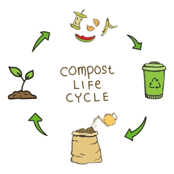
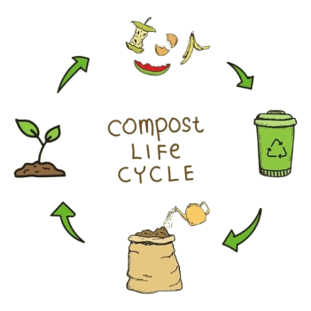

compost
Le compost est destiné aux déchets organiques comme les restes de nourriture, les épluchures et les déchets de jardin. Ces déchets peuvent être compostés pour êtres utilisés comme engrais naturel.
 🏠 page d'accueilLe compost est destiné aux déchets organiques comme les restes de nourriture, les épluchures et les déchets de jardin. Ces déchets peuvent être compostés pour êtres utilisés comme engrais naturel.
 🏠 page d'accueil